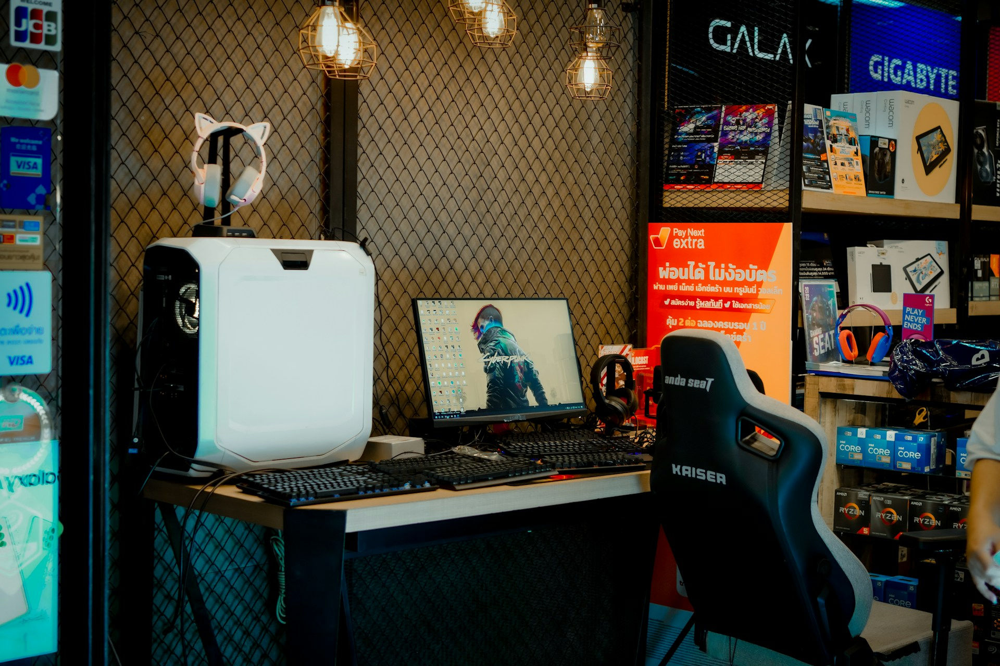

Halo, Selamat datang di TECH CORE.
TECH CORE. merupakan toko komputer yang menyediakan produk dan layanan teknologi. Website ini dibuat sebagai landing page untuk memperkenalkan produk dan layanan unggulan kepada masyarakat dengan tampilan yang rapi, formal, dan jelas.

Tentang Kami
Tech Core. adalah toko komputer yang menyediakan berbagai produk dan layanan teknologi untuk memenuhi kebutuhan pelanggan. Kami menawarkan jasa rakit PC, servis laptop, dan berbagai aksesoris komputer berkualitas. Dengan pelayanan yang profesional dan informasi yang jelas, TechCore Computer berkomitmen membantu pelanggan mendapatkan solusi teknologi yang sesuai dengan kebutuhan mereka.
Produk Kami
Rakit PC
Layanan perakitan PC sesuai kebutuhan pelanggan, mulai dari pemilihan komponen hingga proses pemasangan. Kami membantu menghasilkan PC yang optimal untuk bekerja, belajar, maupun bermain.
Servis Laptop
Layanan perakitan PC sesuai kebutuhan pelanggan, mulai dari pemilihan komponen hingga proses pemasangan. Kami membantu menghasilkan PC yang optimal untuk bekerja, belajar, maupun bermain.
Aksecoris
Menyediakan berbagai aksesoris komputer berkualitas, seperti keyboard, mouse, headset, kabel, dan perangkat pendukung lainnya untuk melengkapi kebutuhan komputer dan laptop.
Kontak saya
Jika anda berminat berkolaborasi atau tertarik dengan proyek saya, silahkan hubungi kami
Email Saya